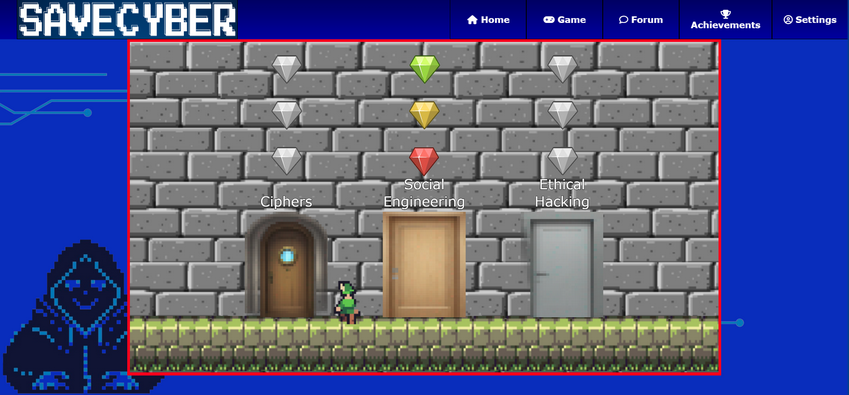
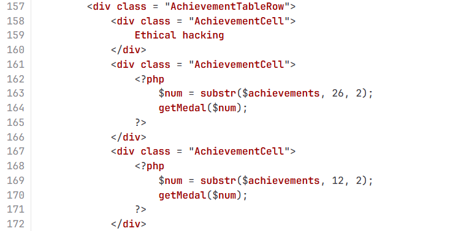
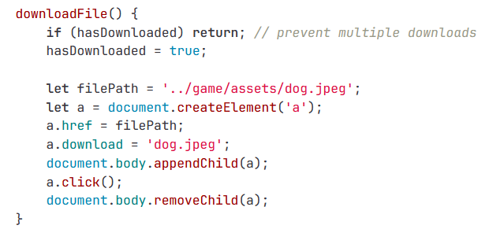
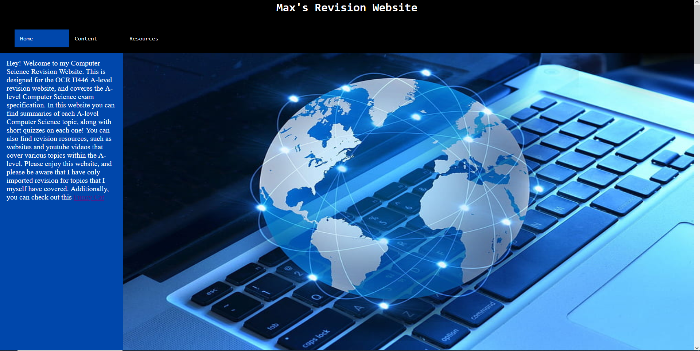
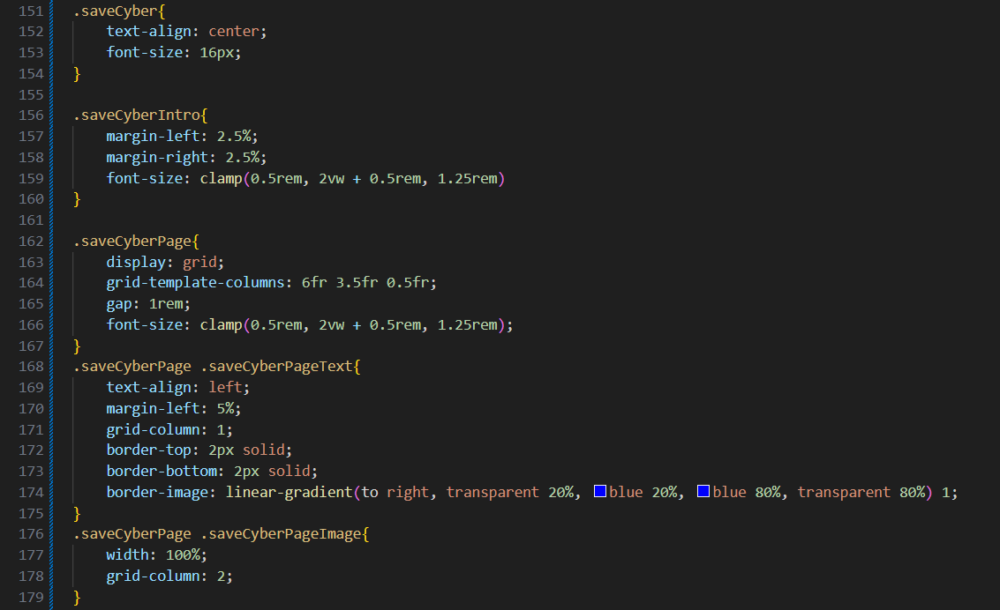
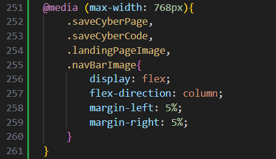
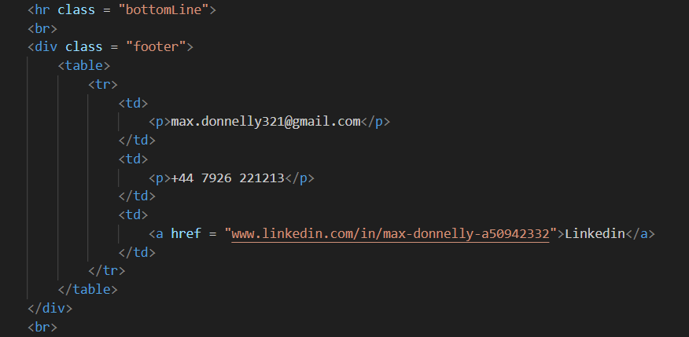

SaveCyber is a project I worked on during my first year of University. Working in a team of 4, we designed a website targeted at a younger audience with the intent of teaching them basic cybersecurity concepts, as there seemed to not be any other sites or resources that did similar things. We employed the use of HTML, CSS, JavaScript, and PHP to create an interactable, engaging website for this.
An example of the game page of the website is shown here. As the game is targeted towards a younger audience, we decided it would be best to teach the concepts of cybersecurity through an interactive game. There are different levels for different aspects of cybersecurity, such as cryptography and social engineering.
There is an interactive nav bar at the top, allowing different web pages to be accessed. The user has to have a parent log in and agree to our terms and conditions to play, and their username and a hashed password will be stored in our database using SQL.



These small samples of code are from some of the parts of this project I worked on. It was my responsibility to create the 'achievements' web page. This page would display various medals depending on how much of a level a user has completed and how fast. To do this, I had one of my peers who was in charge of the database to set up a helper function to retrieve the data, and then I created the code to read this and interpret what achievements to display as completed. I had the achievements stored as a base-4 value, each achievement was represented by a number, displaying if it was incompleted, bronze, silver, or gold. This made the game feel much more interactive.
As you can see from this second piece of code, I was also involved with creating one of the levels within the game where the user would interact with an image on the web page and download it to their computer. I had edited the metadata of this image, so that it contained the password to progress to the next level.
What we used to create this website:
The first web project I worked on was creating a revision site, designed to teach GCSE students important content from their course. I decided to create this as I was a GCSE Computer Science student at the time, and I used it's development as both a way to exercise my programming abilities and as a method of revision. As this was my first time creating a website, the only resources used were HTML and CSS.
Here, you can see the landing page for the website, providing a brief description of the site and a nav bar at the top so the user can easily navigate the website. This was designed using CSS. The design of the website you are currently browsing was inspired by this, as I thought it was a fun way of demonstrating how far I have come.

The website you are currently on is my portfolio website. This site is made purely in HTML and CSS, with no external code. I have made use of a lot of the aspects of each of these, such as heavily styalising each web page on this site to be satisfying to look at and to not overwhelm the user with information, and to format the text in HTML efficiently and effectively. Each aspect of this site was carefully considered and implemented.
Here is some of the CSS code for this site. This displays how some of the SaveCyber text is displayed along with some related text in the 'Other Projects' page. I decided to give every element of this page its own class, allowing for heavy customisation possibilities, and making it much easier to go back and change how an individual block of text, image, or group may be stylised.
I gave each element a descriptive name so that you can easily distinguish what element it is and where in the site it should belong, as seen with examples such as ".saveCyberPageImage". I have also used clamp() in my font size, allowing for the font to scale easily when the screen is readjusted. This allows for a more dynamic website, and it makes this site available on both mobile and desktop machines increasing accessibility.


Here is an example for some of the CSS I used to scale this website down on smaller devices, making it work for mobile machines. This code will, instead of using a grid to store multiple text and images on the same horizontal line, stacks them on top of each other using a dynamic flex container. This will take effect on any screen that is less than 768px wide, allowing for the website to be accessed comfortably on both mobile and desktop. Of course, this code is not all final, as I am still creating this website as I write this, so I implore you to check out my GitHub, where this will be uploaded.

A small snippet of this projects HTML is visible here. I made use of many of the different aspects that HTML provides, such as br, hr, h1-4, div, img, table, and more. I used each of these in unison to craft the template of this website before I stylised it using CSS.
The tools used while creating this website were: